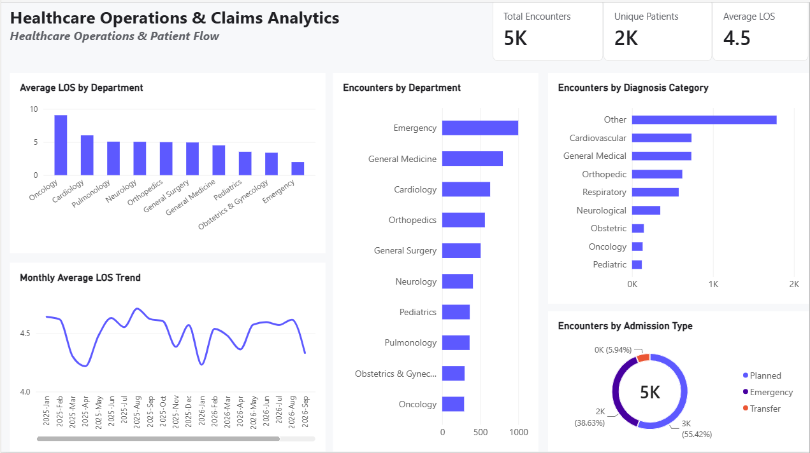
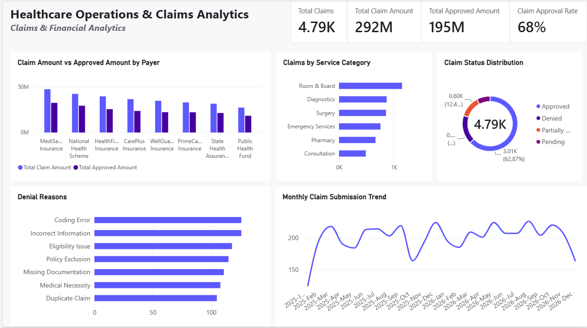
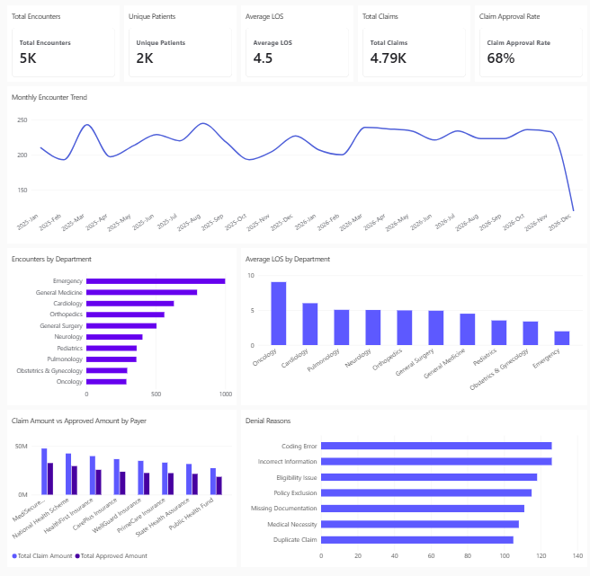

Executive Dashboard
High-level view of healthcare activity, operational trends, and claims performance.

Welcome to my portfolio. This project showcases my approach to healthcare operations and claims analysis, KPI reporting, data modelling, and communicating performance through Power BI.
Business Analysis Power BI DAX Healthcare AnalyticsA multi-page analytics project designed to bring operational performance and insurance claims metrics into a clear reporting experience. The project uses synthetic data for demonstration.
High-level view of healthcare activity, operational trends, and claims performance.
Explores encounters by department, average length of stay, and monthly trends.

Examines claims status and financial measures to support performance monitoring.

A consolidated view of key metrics from the published project.

Data note: The project is intended as a portfolio demonstration using synthetic data. Metrics are illustrative and should not be interpreted as real-world clinical findings.